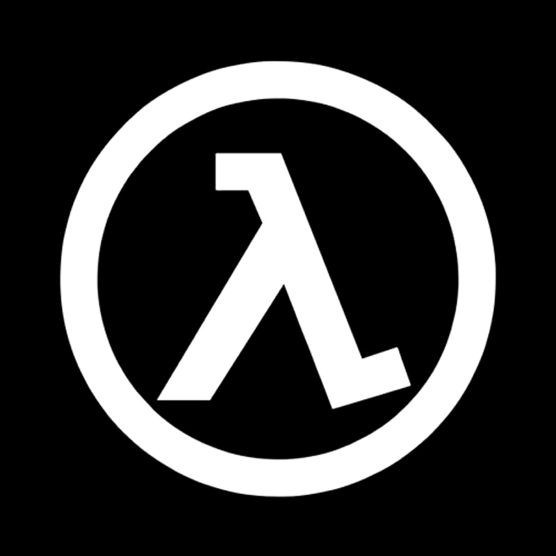

|  | Ega Fashion |

Adidas
nov 4, 2017Nike salah satu perusahaan sepatu, pakaian dan alat-alat olahraga Amerika Serikat yang merupakan salah satu yang terbesar di dunia. Mereka terkenal karena mensponsori beberapa olahragawan terkenal di dunia seperti Tiger Woods, Ronaldo, Courtois, Hazard, Ronaldinho dan Wayne rooney dan Michael Jordan. Selain itu mereka juga memiliki perjanjian dengan berbagai tim sepak bola dunia seperti Manchester United, F.C. Barcelona, Arsenal, F.C. Basel, Juventus, Clube de Regatasd Flamengo, Steaua Bucuresti, AC Sparta Praha, Red Star Belgrade, Inter Milan, VfL Bochum, VfL Wolfsburg, Hertha BSC Berlin, Borussia Dortmund, PSV Eindhoven, Valencia C.F., Urawa Red Diamonds, Kaizer Chiefs, Atlético de Madrid, NK Maribor, Glasgow Celtic, FC Porto, Paris Saint-Germain, Boca Juniors, dan Corinthians. Mereka sering dituduh mempekerjakan anak-anak di bawah umur dalam sweatshop,Manchester city.
Produk sepatu dan pakaian olahraga Nike dengan mudah diidentifikasi oleh khas logo perusahaan, para "swoosh" tik, dan slogan "Just Do It". Berbasis dari nama dewi Yunani yang berarti kemenangan, Nike didirikan tahun 1964 ketika atlet sekaligus pengusaha Oregon bernama Phillip Knight, mengagas impor sepatu lari dari Jepang untuk bersaing dengan merek Jerman seperti Adidas dan Puma yang kemudian mendominasi pasar Amerika Serikat. Keuntungannya adalah bahwa sepatu Jepang lebih murah karena tenaga kerja lebih murah di Jepang.
Dia mulai menjual sepatu keliling dengan tujuan di stadion atletik, dimana penjualan secara pelan tapi pasti meningkat secara dramatis. Pada 1970-an, Knight dan perusahaan yang berkembang nya melihat awal revolusi jogging dan mulai mmasaran produk untuk pelari non-profesional juga. Ia lantas segera membuka pasar yang lebih luas dan mengubah image sepatu lari menjadi sepatu fashion dan menarik semua orang dari anak-anak sampai dewasa memakainya.